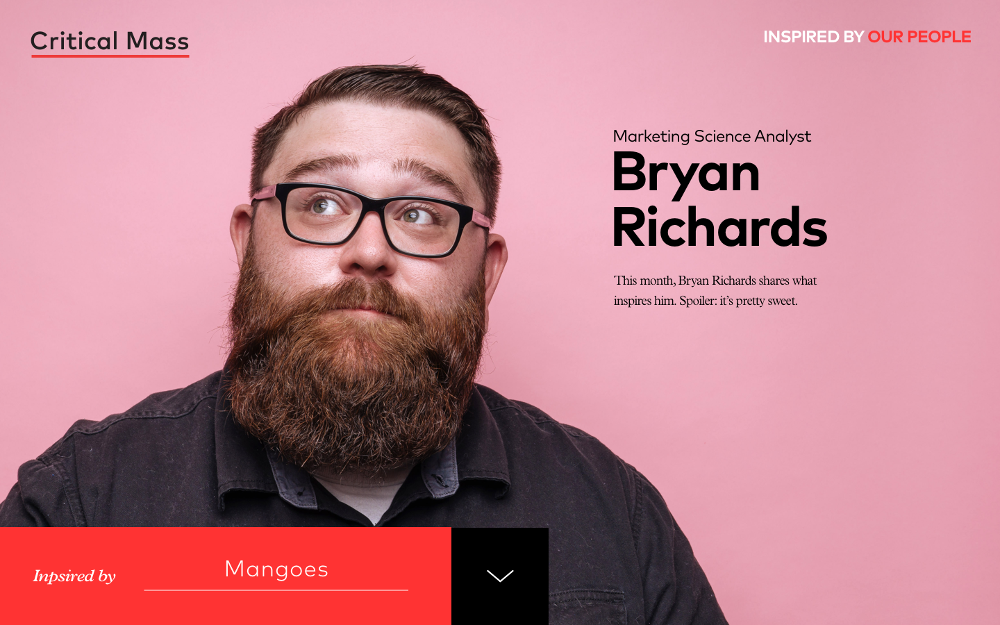
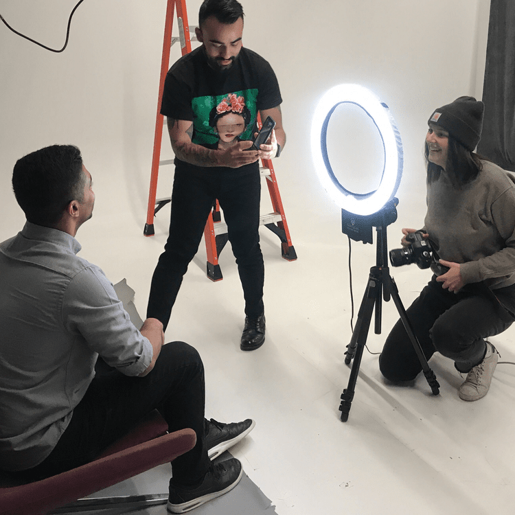
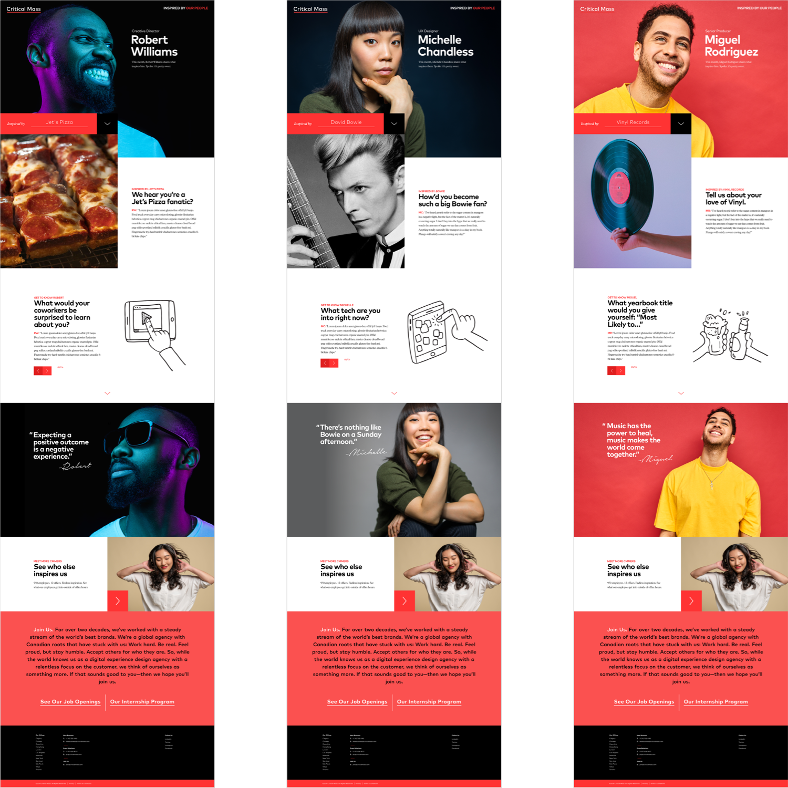

Critical Mass: Inspired by Our People
Overview
Critical Mass takes pride in the people we hire, but we found we could do more to showcase our cool, interesting, quirky, fun, inspired employees (CMMERs).
I created an ‘Inspired By’ platform that features our people — a site that excites the agency and prospective talent.
“Culture is the sum of the individuals in a given place.” — CMMER
Preview


